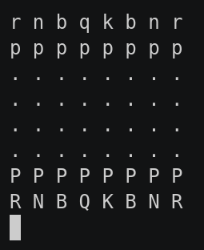

This game part of the classic games, please visit that page first for general information about these games.
| Actions | Agents | Manual Control | Action Shape | Action Values | Observation Shape | Observation Values | Num States |
|---|---|---|---|---|---|---|---|
| Discrete | 2 | No | Discrete(4672) | Discrete(4672) | (8,8,20) | [0,1] | ? |
pettingzoo.classic.chess_v0
agents= ['player_1', 'player_2']

AEC Diagram
Chess is one of the oldest studied games in AI. Our implementation of the observation and action spaces for chess are what the AlphaZero method uses, with two small changes.
Like AlphaZero, the observation space is an 8x8 image representing the board. It has 20 channels representing:
Like AlphaZero, the board is always oriented towards the current agent (your king starts on the first row). So the two players are looking at mirror images of the board, not the same board.
Unlike AlphaZero, the observation space does not stack the observations previous moves by default. This can be accomplished using the frame_stacking argument of our wrapper.
From the AlphaZero chess paper:
[In AlphaChessZero, the] action space is a 8x8x73 dimensional array. Each of the 8×8 positions identifies the square from which to “pick up” a piece. The first 56 planes encode possible ‘queen moves’ for any piece: a number of squares [1..7] in which the piece will be moved, along one of eight relative compass directions {N, NE, E, SE, S, SW, W, NW}. The next 8 planes encode possible knight moves for that piece. The final 9 planes encode possible underpromotions for pawn moves or captures in two possible diagonals, to knight, bishop or rook respectively. Other pawn moves or captures from the seventh rank are promoted to a queen.
We instead flatten this into 8×8×73 = 4672 discrete action space.
| Winner | Loser |
|---|---|
| +1 | -1 |
The legal moves available for each agent, found in env.infos[agent]['legal_moves'], are updated after each step. Taking an illegal move ends the game with a reward of -1 for the illegally moving agent and a reward of 0 for all other agents.